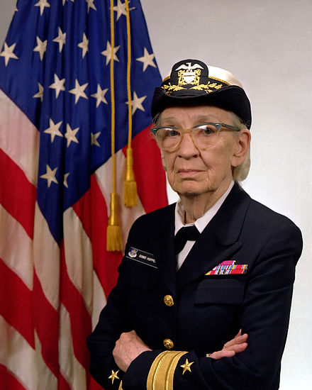

Reading through tons of papers about databases, networking and distributed systems I don't usually pay special attention to who wrote it, until I see lots and lots of really useful papers and same names repeating over and over.
In this little post I wanted to make a list of my favorite women in tech, or software engineering, or computing - whatever you sounds better for you.
The main thing that is common for all of the women below - they all work hard, they are fond of their work and research, and they don't give a fuck about what somebody else thinks they should be doing instead.
Nancy Lynch
Nancy Ann Lynch (born January 19, 1948) is the author of numerous research articles about distributed algorithms and impossibility results, and about formal modeling and validation of distributed systems. She is the author of the graduate textbook "Distributed Algorithms". She is a member of the National Academy of Sciences, the National Academy of Engineering, and an ACM Fellow. Nancy Lynch is a professor at the Massachusetts Institute of Technology. She is the NEC Professor of Software Science and Engineering in the EECS department and heads the Theory of Distributed Systems research group at MIT's Computer Science and Artificial Intelligence Laboratory.
Recognition she received includes ACM Fellow, Dijkstra Prize, National Academy of Engineering, Van Wijngaarden Award, Knuth Prize, Dijkstra Prize, IEEE Emanuel R. Piore Award, Athena Lecturer and National Academy of Sciences.
Barbara Liskov
Barbara Liskov (born November 7, 1939 as Barbara Jane Huberman) is an American computer scientist who is an institute professor at the Massachusetts Institute of Technology and Ford Professor of Engineering in its School of Engineering's electrical engineering and computer science department. She is a Turing award winner and has developed the Liskov substitution principle.
Barbara Liskov won the John von Neumann Medal for "fundamental contributions to programming languages, programming methodology, and distributed systems". The ACM cited her contributions to the practical and theoretical foundations of "programming language and system design, especially related to data abstraction, fault tolerance, and distributed computing." In 2012 she was inducted into the National Inventors Hall of Fame.
Ada Lovelace
Augusta Ada King-Noel, Countess of Lovelace (nee Byron; 10 December 1815 - 27 November 1852) was an English mathematician and writer, chiefly known for her work on Charles Babbage's early mechanical general-purpose computer, the Analytical Engine. Her notes on the engine include what is recognised as the first algorithm intended to be carried out by a machine. As a result, she is often regarded as the first computer programmer.
During a nine-month period in 1842-43, Lovelace translated the Italian mathematician Luigi Menabrea's article on Babbage's newest proposed machine, the Analytical Engine. With the article, she appended a set of notes. Explaining the Analytical Engine's function was a difficult task, as even many other scientists did not really grasp the concept and the British establishment was uninterested in it.Lovelace's notes even had to explain how the Analytical Engine differed from the original Difference Engine. Her work was well received at the time; the scientist Michael Faraday described himself as a supporter of her writing.
Ada Lovelace's notes were labelled alphabetically from A to G. The notes are around three times longer than the article itself and include (in Section G), in complete detail, a method for calculating a sequence of Bernoulli numbers with the Engine, which could have run correctly had the Analytical Engine been built (only his Difference Engine has been built, completed in London in 2002). Based on this work Lovelace is now widely considered the first computer programmer and her method is recognised as the world's first computer program.
Section G also contains Lovelace's dismissal of artificial intelligence. She wrote that "The Analytical Engine has no pretensions whatever to originate anything. It can do whatever we know how to order it to perform. It can follow analysis; but it has no power of anticipating any analytical relations or truths." This objection has been the subject of much debate and rebuttal, for example by Alan Turing in his paper "Computing Machinery and Intelligence".
Grace Hopper
Grace Brewster Murray Hopper (December 9, 1906 - January 1, 1992), nee Grace Brewster Murray, was an American computer scientist and United States Navy Rear Admiral. She was one of the first programmers of the Harvard Mark I computer in 1944, invented the first compiler for a computer programming language, and was one of those who popularized the idea of machine-independent programming languages which led to the development of COBOL, one of the first high-level programming languages. Owing to her accomplishments and her naval rank, she is sometimes referred to as "Amazing Grace". The U.S. Navy Arleigh Burke class guided-missile destroyer USS Hopper (DDG-70) is named for her, as is the Cray XE6 "Hopper" supercomputer at NERSC.
Kathleen Booth

Kathleen Booth nee Britten is credited with writing the first assembly language and the design of the assembler and autocode (ARC and APE(X)C) for the first computer systems at Birkbeck College, University of London.
Dana Ulery
Dr. Dana Ulery (born 1938) is an American computer scientist and pioneer in scientific computing applications. She began her career in 1961 as the first woman engineer at the NASA Jet Propulsion Laboratory (Pasadena, CA), designing and developing algorithms to model NASA's Deep Space Network capabilities and automating real-time tracking systems for the Ranger and Mariner space missions using a North American Aviation Recomp II, 40-bit word size computer. Over the course of her career, she has held positions as an applied science and technology researcher and manager in industry, academia, and government. In 2007, she retired from her position as Chief Scientist of the Computational and Information Sciences Directorate at the United States Army Research Laboratory(ARL).
Margaret Hamilton

Margaret Heafield Hamilton (born August 17, 1936) is a computer scientist, systems engineer and business owner. She was Director of the Software Engineering Division of the MIT Instrumentation Laboratory, which developed on-board flight software for the Apollo space program. In 1986, she became the founder and CEO of Hamilton Technologies, Inc. in Cambridge, Massachusetts. The company was developed around the Universal Systems Language based on her paradigm of Development Before the Fact (DBTF) for systems and software design.
Hamilton has published over 130 papers, proceedings, and reports concerned with the 60 projects and six major programs in which she has been involved.
The SAGE Project was an extension of Project Whirlwind, started by MIT, to create a computer system that could predict weather systems and track their movements through simulators; SAGE was soon developed for military use in anti-aircraft air defense from potential Soviet attacks during the Cold War. For her part, Hamilton described her duties as such: "What they used to do when you came into this organization as a beginner, was to assign you this program which nobody was able to ever figure out or get to run. When I was the beginner they gave it to me as well. And what had happened was it was tricky programming, and the person who wrote it took delight in the fact that all of his comments were in Greek and Latin. So I was assigned this program and I actually got it to work. It even printed out its answers in Latin and Greek. I was the first one to get it to work."
It was her efforts on this project that made her a candidate for the position at NASA as the lead developer for Apollo flight software.
At NASA, Hamilton's team was responsible for implementing the Apollo on-board guidance software required to navigate and land on the Moon, and its multiple variations used on numerous missions (including the subsequent Skylab). She worked to gain hands-on experience during a time when computer science courses were uncommon and software engineering courses did not exist.
Her areas of expertise include systems design and software development, enterprise and process modelling, development paradigm, formal systems modeling languages, system-oriented objects for systems modelling and development, automated life-cycle environments, methods for maximizing software reliability and reuse, domain analysis, correctness by built-in language properties, open-architecture techniques for robust systems, full life-cycle automation, quality assurance, seamless integration, error detection and recovery techniques, man-machine interface systems, operating systems, end-to-end testing techniques, and life-cycle management techniques.
Karen Sparck Jones
Karen Sparck Jones worked at the Cambridge Language Research Unit from the late 1950s, then at Cambridge's Computer Laboratory from 1974, and retired in 2002, holding the post of Professor of Computers and Information, which she was awarded in 1999. She continued to work in the Computer Laboratory until shortly before her death. Her main research interests, since the late 1950s, were natural language processing and information retrieval. One of her most important contributions was the concept of inverse document frequency (IDF) weighting in information retrieval, which she introduced in a 1972 paper. IDF is used in most search engines today, usually as part of the tf-idf weighting scheme. To commemorate her achievements, the Karen Sparck Jones Award was created in 2008 by the BCS and its Information Retrieval Specialist Group (BCS IRSG), which is sponsored by Microsoft Research.
Radia Joy Perlman

Radia Joy Perlman (born January 1, 1951) is a software designer and network engineer. She is most famous for her invention of the Spanning Tree Protocol (STP), which is fundamental to the operation of network bridges, while working for Digital Equipment Corporation. She also made large contributions to many other areas of network design and standardization, such as link-state protocols, including TRILL, which she invented to correct some of the shortcomings of spanning-trees. She is sometimes referred to as the "Mother of the Internet", a title which she dislikes.
Her work transformed the Ethernet protocol from using a few nodes over a limited distance, into something able to create large networks.
Perlman is the author of one textbook on networking and coauthor of one textbook on network security.
Sally Floyd
Sally Floyd was a computer scientist at the International Computer Science Institute in Berkeley, California.
Floyd is best known in the field of congestion control as the inventor of Random Early Detection ("RED") active queue management scheme, thus founding the field of Active Queue Management (AQM) with Van Jacobson. Almost all Internet routers use RED or something developed from it to manage network congestion. Floyd devised the now-common method of adding delay jitter to message timers to avoid synchronization.
Floyd, with Vern Paxson, in 1997 identified the lack of knowledge of network topology as the major obstacle in understanding how the Internet works. This paper, "Why We Don't Know How to Simulate the Internet", was re-published as "Difficulties in Simulating the Internet" in 2001 and won the IEEE Communication Society's William R. Bennett Prize Paper Award.
Floyd is also a co-author on the standard for TCP Selective acknowledgement (SACK), Explicit Congestion Notification (ECN), the Datagram Congestion Control Protocol (DCCP) and TCP Friendly Rate Control (TFRC).
She received the IEEE Internet Award in 2005 and the ACM SIGCOMM Award in 2007 for her contributions to congestion control. She has been involved in the Internet Advisory Board, and is one of the top-ten most cited researchers in computer science.
Hedy Lamarr
Hedy Lamarr was an Austrian and American film actress and inventor.
At the beginning of World War II, Lamarr and composer George Antheil developed a radio guidance system for Allied torpedoes, which used spread spectrum and frequency hopping technology to defeat the threat of jamming by the Axis powers. Though the US Navy did not adopt the technology until the 1960s, the principles of their work are now incorporated into modern GPS, Wi-Fi, CDMA and Bluetooth technology, and this work led to their being inducted into the National Inventors Hall of Fame in 2014.